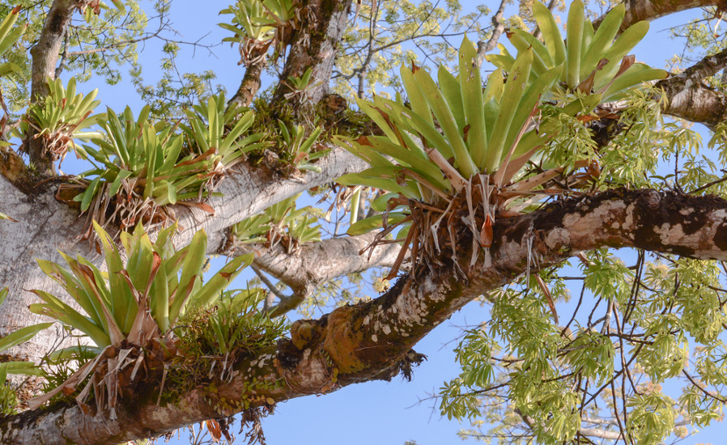
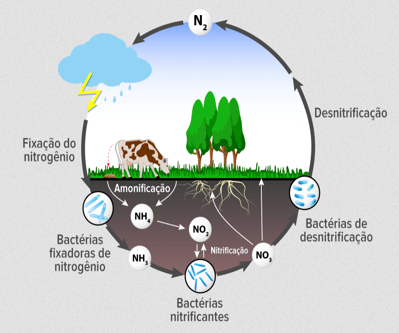
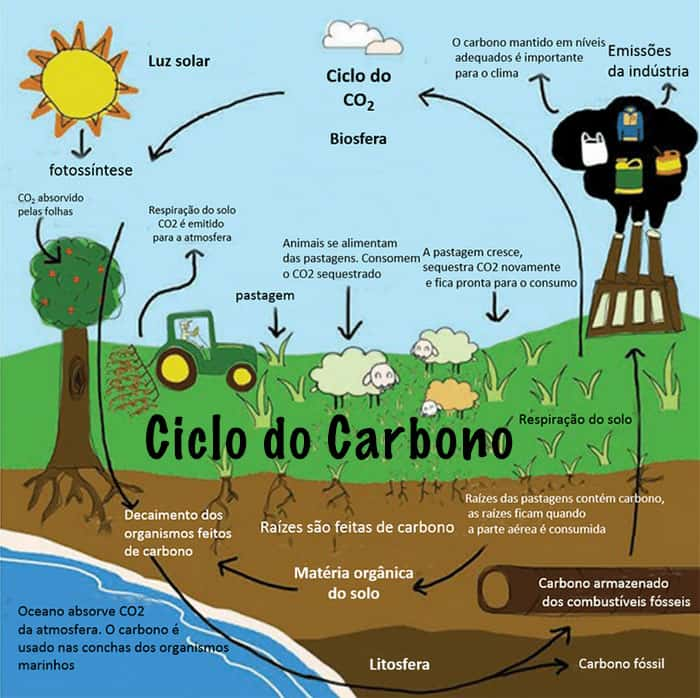
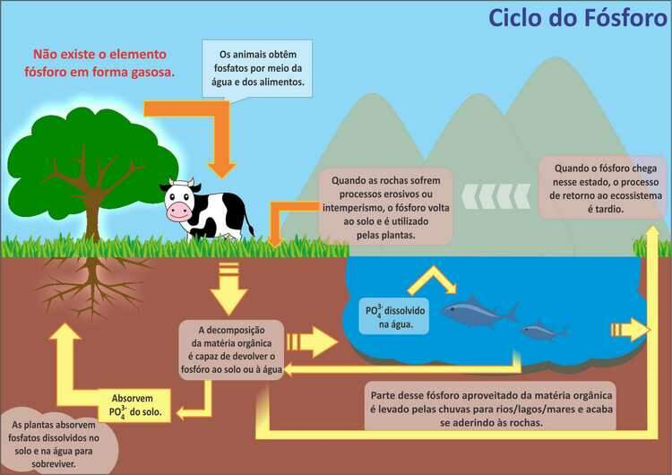

O que será abordado
- Relações Ecológicas
- Ciclos Biogeoquímicos
- Ciclo da água
- Ciclo do nitrogênio
- Ciclo do carbono
- Ciclo do fósforo
Relações Ecológicas
As diferentes populações de seres vivos coexistem nos ecossistemas, mantendo relações baseadas em seu habitat e nicho ecológico, sendo aquele o local e as condições de vida em meio físico de uma espécie, população ou comunidade; e este o modo de vida de uma população e seus membros no seu habitat, sua alimentação, atividades que desempenham, hábitos reprodutivos, moradia, se são de vida livre ou parasitas, predadores etc.
A partir do estabelecimento de nicho ecológico e habitat, define-se que as relações ecológicas são as aquelas estabelecidas entre os membros e populações de uma comunidade biológica. Elas são divididas em intraespecíficas (ocorrem apenas entre os membros de uma espécie) e interespecíficas (entre membros de diferentes espécies).
Ciclos Biogeoquímicos
Conforme o célebre químico Lavoisier “na natureza nada se perde, nada se cria e tudo se transforma”, e uma dinâmica semelhante ocorre com a matéria nos ecossistemas. Ela é reciclada e distribuída entre fatores bióticos e abióticos, sofrendo transformações físicas, químicas e geográficas ao longo de tais ciclos, dos quais os seres vivos também fazem parte, modificando-se assim nos ciclos biogeoquímicos, fundamentais para a compreensão do funcionamento dos ecossistemas, serviços ecossistêmicos e desenvolvimento de processos sustentáveis.
Os ciclos biogeoquímicos são formados por:
a) processos biológicos: todos aqueles efetuados pelos seres vivos em sua fisiologia e relações ecológicas, tais como metabolismo, respiração, morte, nutrição, reprodução, estabelecimento de moradia etc;
b) processos químicos: transformam a composição da matéria;
c) processos geológicos: alteram a estrutura da Terra, em especial de sua crosta, por exemplo: erupções vulcânicas, intemperismo de rochas etc, de grande importância para a criação de habitats e formação dos solos;
d) processos físicos: modificam a agregação da matéria sem mudar sua composição química, um dos mais frequentes é a mudança de estado físico.
Os principais são: ciclo da água, ciclo do nitrogênio, ciclo do carbono e ciclo do fósforo.
Ciclo da água

Ciclo do nitrogênio
Ciclo do carbono
Ciclo do fosforo
Projeto Angelim Vermelho | Desenvolvido por Maria Eduarda Ferreira Rodrigues e Sabrina da Paz Alves | Fundação Matias Machline - 2021